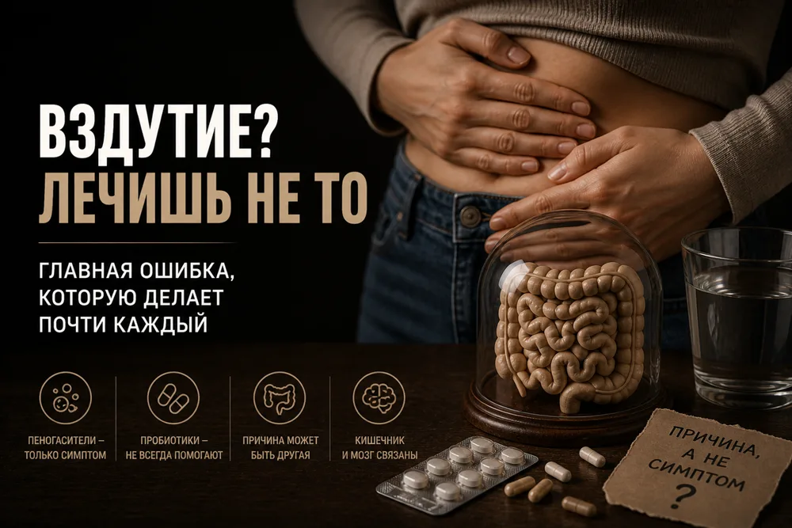

Вздутие не проходит: почему лечение не работает

Живот вздувается, таблетки помогают на время — и всё возвращается. Почти всегда причина в том, что лечится не то.
Вздутие — это разные механизмы
Вздутие — это не одна проблема, а несколько разных механизмов, которые выглядят одинаково:
- Истинное увеличение газа. Брожение углеводов при FODMAP-продуктах, СИБР, нарушении всасывания.
- Нарушение моторики. Газ продвигается плохо и задерживается в кишечнике.
- Висцеральная гиперчувствительность. Объём газа нормальный, но нервная система воспринимает растяжение как боль.
- Диафрагмально-прямокишечный синдром. Живот выглядит вздутым без увеличения газа.
Каждый механизм требует своего подхода. Без диагностики отличить один от другого невозможно — поэтому лечение «чего-то от живота» часто не срабатывает.
Самолечение обычно идёт по кругу: пеногасители, сорбенты, пробиотики, травы. Иногда становится легче, но причина так и не найдена.
Стресс и ось «кишечник — мозг»
Стресс замедляет моторику и повышает висцеральную чувствительность. Вздутие вызывает тревогу, тревога усиливает вздутие. Одними пробиотиками этот круг не разорвать.
Нужна работа с осью «кишечник — мозг»: когнитивно-поведенческая терапия, техники релаксации, иногда низкие дозы антидепрессантов.
Правильный алгоритм
- Исключить органическую патологию: анализы, кальпротектин, УЗИ, при тревожных симптомах — колоноскопия.
- Дыхательные тесты: лактулоза, лактоза, фруктоза.
- Пищевой дневник 2–4 недели.
- Пробная диета с низким FODMAP на 2–4 недели.
- Если не помогло — искать нарушение моторики или гиперчувствительность.
- И только потом — целенаправленные пробиотики по показаниям.
В половине случаев объём газа нормальный. Проблема в моторике или чувствительности — поэтому пробиотики и пеногасители часто не работают.
Вздутие — симптом, а не диагноз. Начинать надо с диагностики, а не с очередной таблетки.
Системный подход лечит. Хаотичный приём «чего-то от живота» только затягивает проблему и создаёт иллюзию, что решения нет. Решение есть — но начинается оно с диагностики.

Ваш врач Гондусов Д.В. 
Статья носит информационный характер и не заменяет консультацию врача. Не занимайтесь самодиагностикой.